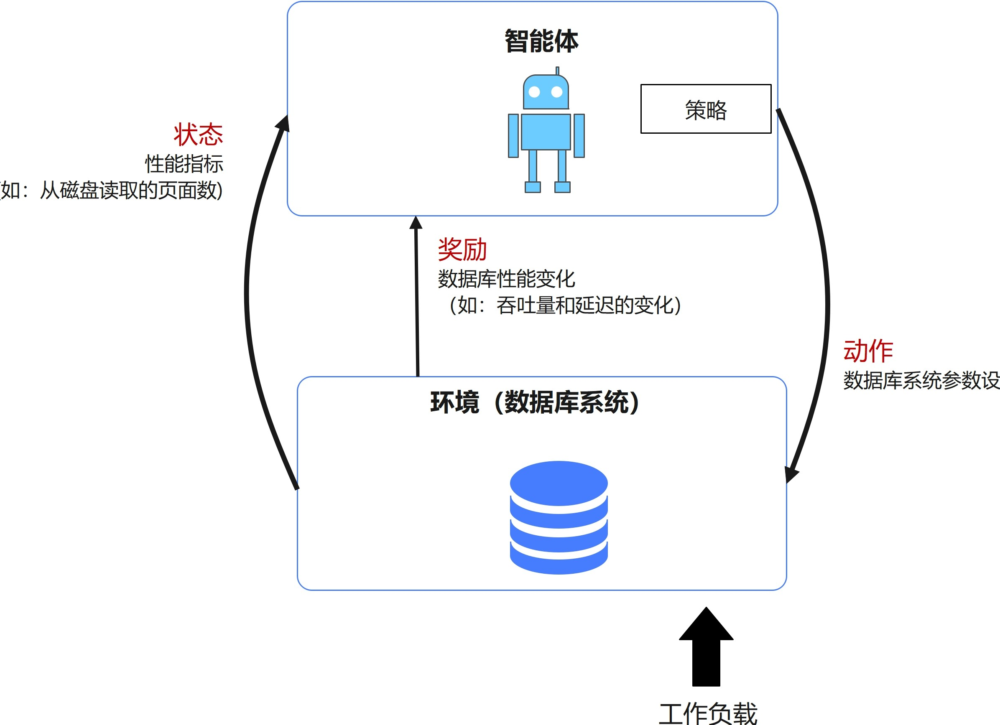
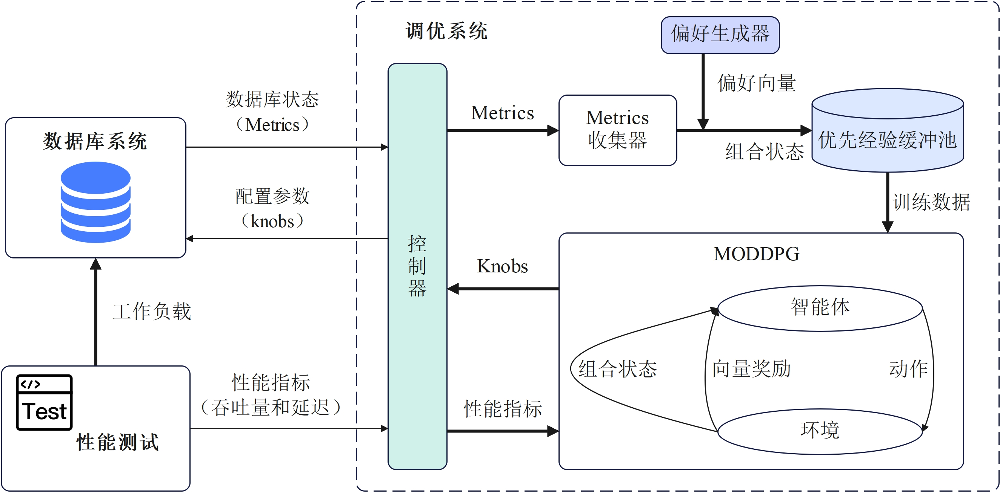
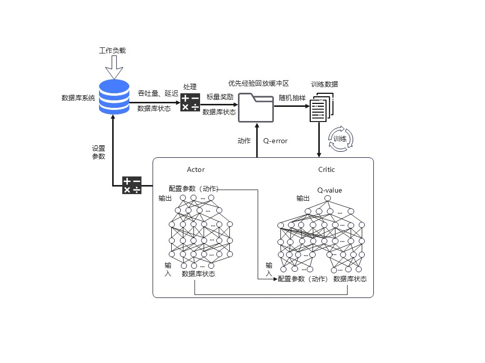
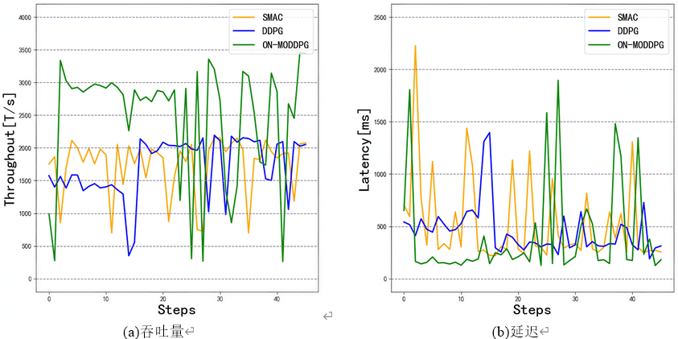
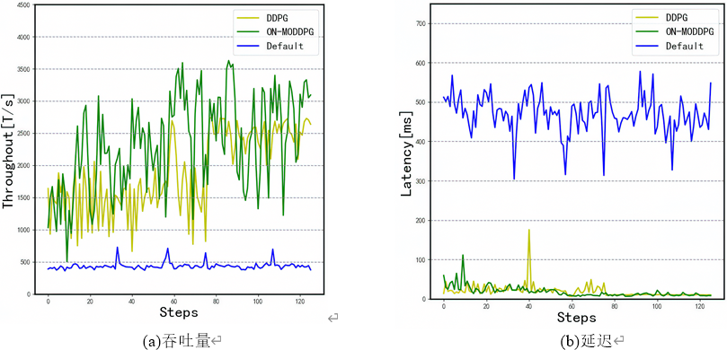
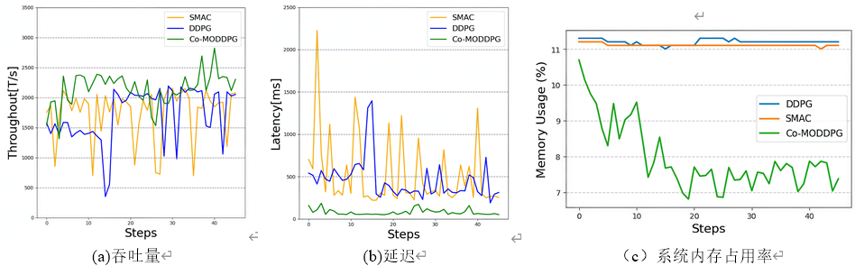

数据库系统智能优化
数据库系统的参数配置直接影响其性能和系统资源的利用率。主流的关系数据库管理系统有数百个参数可供调整以获得最佳的性能和服务能力。数据库系统性能的优化通常由经验丰富的数据库管理员(DBA)手动进行,但是由于数据库系统配置参数众多、异构且参数之间的存在复杂的相关性,传统的人工进行参数调优的工作方法效率低、成本高、可复用性差。为了提高数据库系统性能优化的工作效率，数据库系统的自动化参数调优技术成为数据库领域的研究热点。
数据库系统参数调优的挑战主要来自以下几个方面：
- 参数的变化对数据库系统性能的影响关系复杂
- 参数空间高维且异构
- 参数的最优设置与负载特征、运行环境高度相关，具有不可重用性
- 参数数量不断增长

强化学习应用于数据库系统参数优化的工作框架
将深度强化学习方法应用于数据库系统参数的自动化优化，可以解决传统机器学习方法依靠大量高质量训练样本、在高维连续空间中难以获取最优参数的难题。但是已有的相关工作基于DDPG(Deep Deterministic Policy Gradient)的深度强化学习方法都把本质上是多目标优化任务的数据库参数调优，通过线性组合将多个目标转换成了单个目标，来使用传统的单目标强化学习模型，此类做法存在若干缺陷。
- (1)提前确定偏好是一项繁琐且具有盲目性的任务
- (2)设定固定偏好难以应对不同特征的任务需求。
- (3)基于DDPG的强化学习方法其内部使用的奖励机制是基于标量形式的并通过贝尔曼方程(Bellman equation)对其迭代更新，存在难以有效对齐偏好和相应的最优策略的问题，需要大量训练样本去实现对齐，并且可能导致次优解的产生。
- (4)已有的相关工作通常只考虑数据库系统性能的提升，没有将资源利用率等作为优化目标。
针对以上问题，提出了一个原生多目标的深度强化学习算法，可以对数据库系统的参数进行多目标优化以提升其性能和资源利用率。

数据库参数调优系统MODBTune
数据库参数优化模型的训练过程

基于TPC-C的MySQL数据库参数优化的性能对比

基于TPC-C的PostgreSQL数据库参数优化的性能对比

数据库性能和资源利用率协同优化